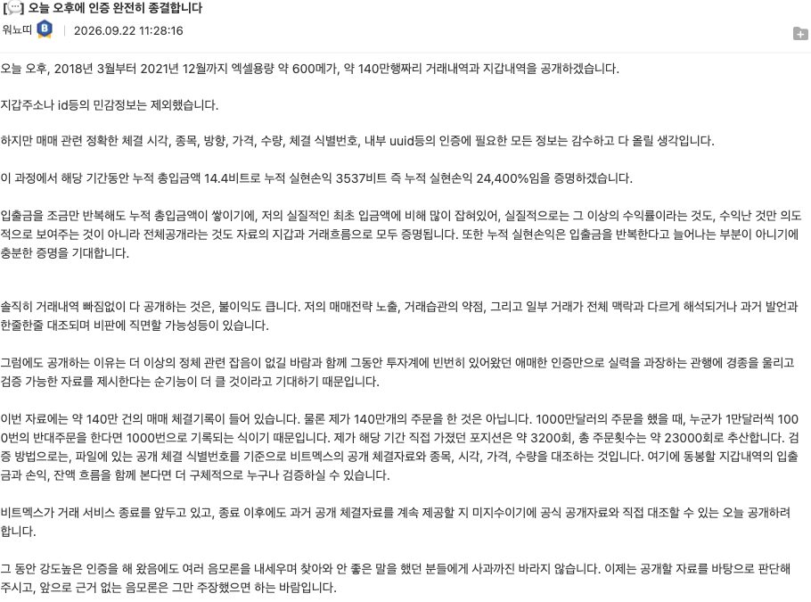
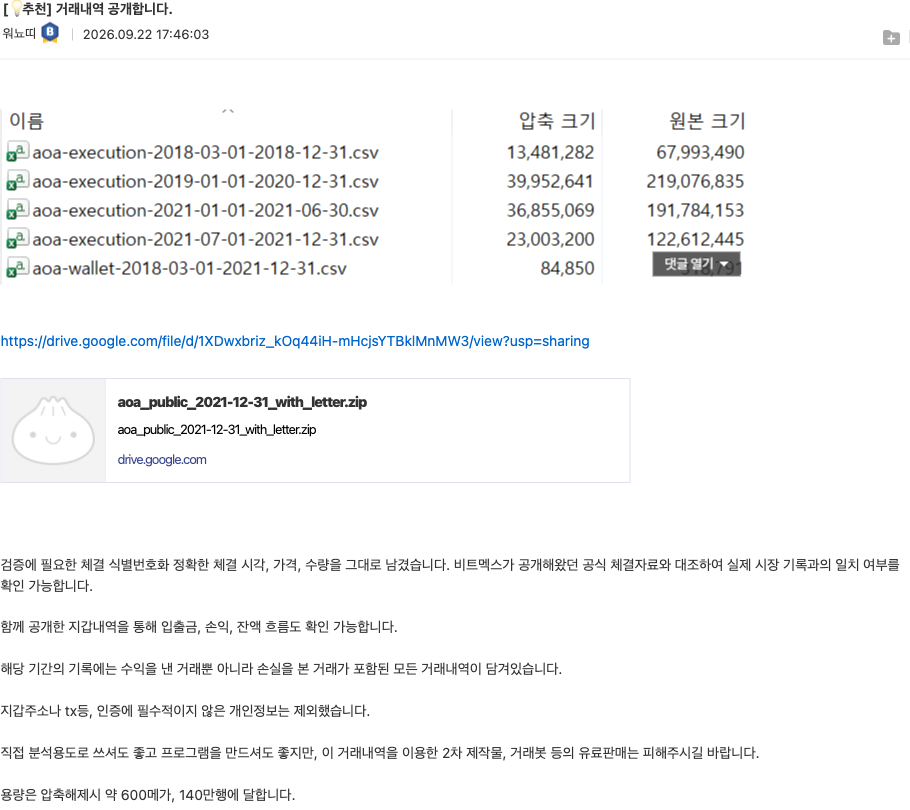
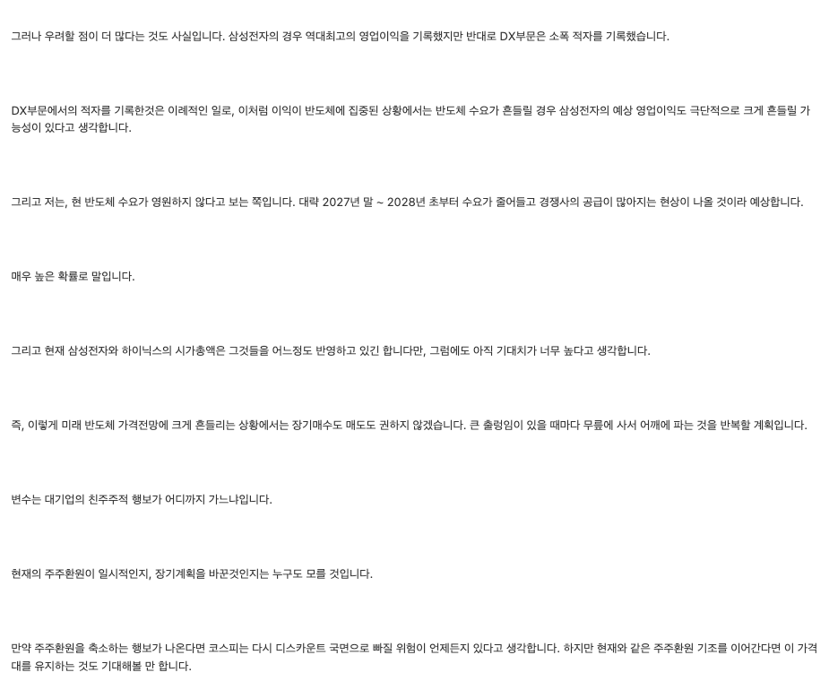
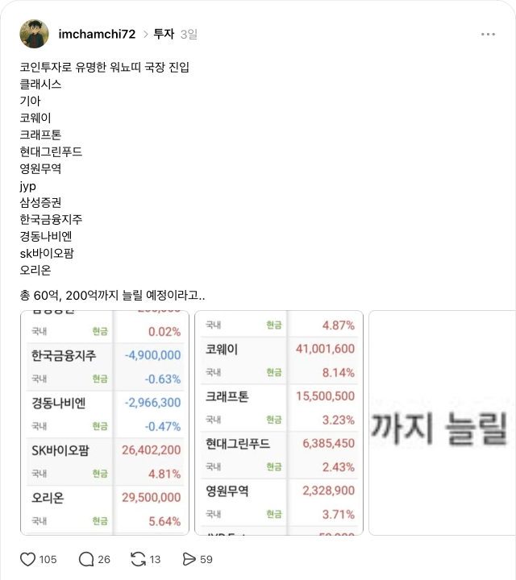
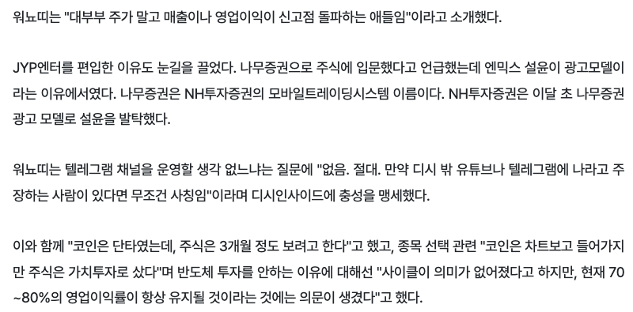
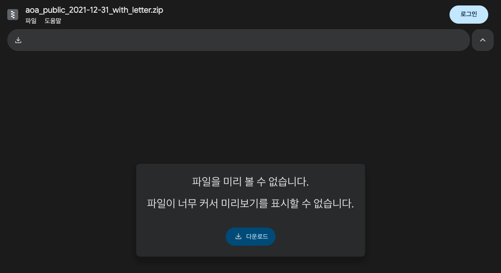

워뇨띠 리플레이 분석
전설은 어디서 사고,
어디서 팔았나
프로게이머 경기를 다시 보면 손 빠르기보다 세팅이 먼저 보인다. 오늘은 워뇨띠의 리플레이 세 개를 돌린다. 2018~2021 코인 체결 원장, 2026년 9월 90일 서한, 2026년 10월 국장 12종목. 그리고 끝에서 묻는다. 이 중에서 내 계좌로 가져올 수 있는 건 뭐지?
← → 키, 스페이스, 스와이프로 넘긴다. 입문은 처음 듣는 사람용, 경험자는 매매해 본 사람용 심화다. 공개된 과거 자료와 제3자 재게시를 분석한 강의이며 투자 권유가 아니다. 모든 매매에 원금 손실 위험이 있다.
지금 어느 게임에서 접속했어?
워뇨띠는 같은 사람인데 게임마다 플레이가 다르다. 그래서 내가 어느 게임에 앉아 있는지부터 정해야 그의 무엇을 볼지가 정해진다.
1. 주로 하는 게임은?
2. 장중에 차트를 볼 수 있는 시간은?
둘 다 고르면 오늘 볼 곳이 나온다
손들기로 해도 된다. 답에 따라 집중할 리플레이가 달라진다.
나는 전설의 리플레이를 보고도 반대로 플레이했다
9월 22일 워뇨띠의 체결 원장이 공개됐을 때, 내 매매 기록이랑 나란히 놓고 봤다. 결론은 아팠다. 내 규칙은 이미 그의 방향과 대부분 맞는데, 실제 클릭이 반대였다.
📜 나와 워뇨띠의 타임라인
- 워뇨띠, BitMEX에서 14.5 BTC 입금 → 실현손익 3,537 BTC
- 나, 고배율 단타 계좌 −97%로 폐쇄
- 나, BTC 11배 롱. 코치가 기다리라는데 버팀. −20.7%
- 워뇨띠 체결 원장 공개 + 90일 서한
- 나, 원장 140만 행을 다시 세서 내 기록과 갭 분석
- 워뇨띠 국장 12종목 캡처가 퍼짐. 단타 대신 실적주
- 그 12종목을 실적·주가로 다시 계산한 걸 들고 왔다
갭 분석 한 줄
내 규칙은 바이낸스 최대 3배, 손절가 먼저, 수익은 업비트로. 워뇨띠 데이터와 방향이 같았다.
그런데 실제 기록에는 손절 없는 추격 숏, 코치 NO를 무시한 수익, 11배 장기 보유가 있었다.
부족한 건 기법이 아니라 규칙과 클릭 사이의 간격이었다.
리플레이를 보고 손가락만 따라 하면 진다
프로의 APM을 따라 하면 손목만 나간다. 전설을 따라 하다 망하는 패턴은 대개 이 셋이다.
① 종목 복사
"워뇨띠가 산 거 나도 산다." 그런데 12종목 중 JYP는 보도 추정으로 전체의 약 0.03%였다. 비중을 모르고 이름만 따라 하면 그의 시험용 한 칸을 내 메인으로 사게 된다.
② 빈도 복사
코인 포지션 보유시간 중앙값은 25.9분이었다. 그는 하루 10시간씩 차트를 봤다. 직장인이 이걸 따라 하면 점심시간 5분 동전 던지기가 된다.
③ 생존편향
원장에는 초기 강제청산 흔적(59행, 대부분 2018년)이 있다. 살아남은 결과만 보고 초반의 고위험까지 영웅담으로 삼으면, 나는 청산된 쪽 통계에 들어간다.
게임은 바뀌어도 세팅값은 그대로였다
워뇨띠는 코인에서는 차트를 보고, 주식에서는 실적을 본다. 사는 이유는 게임마다 다르다. 그런데 계좌를 지키는 방식은 세 리플레이에서 똑같이 반복된다.
= 타점코인: 캔들·거래량·추세, 지정가로 짧게. 국장: 매출·영업이익 신고점, 주가가 아직 안 따라온 종목을 약 3개월 시야로.
= 판단 틀서한에서 보인 3요소: 가치(싼가) + 추세(지금 오르나) + 주목도(돈이 몰리나). 하나만으로는 사지도, 숏치지도 않는다.
= 생존계좌 대비 위험을 낮게, 틀린 포지션은 오래 끌지 않기, 한 종목과 사랑에 빠지지 않기, 번 돈은 판 밖으로 빼기, 돈이 커질수록 느리게.
외우고 가는 게 아니라, 세 장을 만들고 간다
🗺️ 내 게임 구분표
코인·국장·배당 계좌마다 "무엇을 보고 사는지"를 한 줄씩. 한 게임의 조작법을 다른 게임에 가져가지 않게.
🃏 살 때·팔 때 카드 1장
진입 조건, 가격 손절, 시간 손절, 수익 인출. 실습 장에서 체크하면 문장으로 만들어진다.
📅 이번 주 행동 1개
날짜가 박힌 한 줄. 예: 10/22 서한 1차 검증 기록, 10/30 기아 실적 관찰.
먼저 원본부터: 그는 디시에 "전부" 올렸다
2026-09-22 오전에 예고하고, 오후에 구글 드라이브 링크를 올렸다. 예고에 적은 숫자(14.4 BTC 입금, 3,537 BTC 실현손익, 약 140만 행, 약 23,000 주문)를 내가 파일로 다시 셌더니 그대로 맞았다.


이미지를 누르면 원본 크기로 열린다. 원문 링크와 드라이브 주소는 마지막 자료실 장에 모았다.
140만 번 클릭한 게 아니라, 2만 3천 번 판단했다
체결 행은 144만 줄이다. 그런데 독립 주문으로 묶으면 23,417개. 한 주문이 평균 61조각으로 나뉘어 체결됐다. APM이 아니라 빌드오더를 봐야 한다.
주문 중 지정가 비중. 시장가는 2.65%뿐
BTC 체결 수량 중 메이커. 수수료를 받으면서 체결했다
전체 주문 중 BTC 비중. 알트는 곁다리
BTC 포지션 승률. 날짜로 보면 손실일이 3일에 1일
롱도 숏도 쳤다
여기서 보이는 사는 자리
- 쫓아가서 시장가로 사지 않는다. 오는 가격을 지정가로 기다린다
- 가장 잘 아는 판(BTC)에 집중. 2025 인터뷰에서도 알트 타율이 낮았다고 본인이 인정
- 방향 신앙이 없다. 숏 수익이 롱보다 컸다
초반엔 러시, 후반엔 운영. 계좌 대비 위험은 5분의 1로
2018년엔 포지션 1,755번에 보유 중앙값 12분이었다. 2021년엔 124번에 15시간. 포지션 절대 크기는 100배 커졌지만 계좌 대비 익스포저는 3.5배에서 0.7배로 내려갔다.
계좌 대비 익스포저 중앙값 (배)
보유시간 중앙값 (분)
연도별 원장
번 돈의 80%를 거래소 밖으로 뺐다
입금은 14.5 BTC였다. 실현손익 3,537 BTC 중 2,833 BTC를 출금했다. 거래소 잔고를 끝없이 굴리지 않고, 커질수록 더 많이 창고로 옮겼다.
연도별 출금 (BTC)
지갑 흐름
5·19 폭락 새벽, 숏을 익절했다. 다음 클릭은?
먼저 고르고, 그다음 원장을 연다. 이 장면은 유명 해설 영상에도 나온다. 영상이 말한 것과 원장이 같은지도 같이 본다.
하나 골라야 원장이 열린다
손들기로 해도 된다. 세 쪽에 몇 명씩인지 세고 누른다.
스위칭은 양날의 검
틀리면 바로 반대로 가는 유연성은 2020년 3월에는 통했다(롱 손절 뒤 숏 +18, +30 BTC). 2021년 5월 19일에는 같은 동작으로 그날 시작한 손실 포지션 합계가 약 −216 BTC였다.
영상 해설 vs 내 재계산
영상: 「워뇨띠 매매내역 한방정리」 YouTube. 영상의 전 종목 통계와 내 BTC 재구성은 범위가 달라 숫자가 조금씩 다를 수 있다.
BTC 포지션 상위 1%가 순이익을 전부 벌었다
BTC 완결 포지션 2,589개를 순손익 순으로 줄 세웠다. 상위 26개(1%)의 합이 전체 순이익보다 컸다. 나머지 2,563개는 합치면 거의 0이었다. 75%가 넘는 승률은 계좌를 지키는 역할이었고, 돈은 며칠씩 들고 간 몇 판에서 나왔다.
줄 세운 결과
보유시간이 두 종류였다
전체 중앙값은 26분인데 상위 31개는 중앙값 약 4.3일. 이긴 판은 길게, 틀린 판은 짧게.
계산: 볼트에 남은 BTC(XBTUSD) 포지션 재구성 파일로 다시 셌다. 46개 전 종목 기준인 유튜브 해설의 "상위 1%(31개) = 수익 91%"와 기준이 달라 숫자도 다르다.
추세매매는 파도를 타고, 역추세매매는 카운터를 친다
같은 차트를 보고도 들어가는 이유가 정반대인 두 방식이 있다. 어느 쪽이 더 센 게 아니다. 들어가는 자리가 다르니 나오는 자리도 달라야 한다.
🏄 추세매매 = 대시판 올라타기
오르는 걸 사고, 내리는 걸 판다. "이미 움직인 방향이 한동안 이어진다"에 건다.
- 들어갈 때
- 신고가 돌파, 이동평균 위로 정렬, 눌림 뒤 다시 오를 때
- 손절 자리
- 돌파한 자리 아래, 직전 눌림 저점 아래
- 나올 때
- 고점 대비 −X% 트레일링, 이동평균 이탈. 목표가를 미리 정하지 않고 추세가 꺾일 때까지
- 승률·손익비
- 자주 지고 가끔 크게 번다
- 망하는 법
- 꼭대기 추격, 작은 손절이 이어질 때 규칙 바꾸기
🥊 역추세매매 = 카운터 패리
많이 빠진 걸 사고, 많이 오른 걸 판다. "너무 갔다, 되돌아온다"에 건다.
- 들어갈 때
- 급락·급등 직후, 과열 지표, 큰 지지·저항 도달
- 손절 자리
- 방금 찍은 극단(저점·고점) 바로 너머. 촘촘하다
- 나올 때
- 되돌림 목표(평균·중간값)에서 빨리. 길게 들고 가지 않는다
- 승률·손익비
- 자주 이기고 가끔 크게 진다
- 망하는 법
- 떨어지는 칼날 물타기, 손절 없이 "언젠간 돌아온다"
역추세를 더 자주 쳤고, 돈은 추세에서 벌었다
BTC 포지션 2,589개를 진입 직전 가격 방향과 비교했다. 직전 4시간(또는 24시간) 동안 오른 상태에서 롱, 내린 상태에서 숏이면 추세. 반대면 역추세. 기준 시간을 바꿔도 결론은 같았다.
읽는 법
- 승률은 둘 다 약 75%. 승률로는 차이가 안 보인다
- 역추세는 횟수가 더 많고, 최대 수익 31판에도 많지만 최대 손실 31판에는 더 많다
- 순이익은 추세 쪽이 약 4~5배
틀리면 0.2%에서 나오고, 맞으면 고점에서 몇 % 내줄 때 나왔다
포지션마다 보유 기간의 시간봉 고가·저가를 겹쳐서, 가장 유리했던 지점(고점)과 실제 청산가를 비교했다. 손절과 익절의 모양이 완전히 달랐다.
🔴 진 판 628개
가격 기준 손실 중앙값. 10%는 이보다 크게() 졌다
절반()이 1시간 안에 정리됐다. 손절이 짧고 촘촘했다.
🟢 4시간 넘게 들고 간 이긴 판
고점 대비 내주고 나온 폭(중앙값). 보유 중 고점은 중앙값
고점에서 딱 팔지 않았다. 조금 내주는 걸 받아들이고 추세가 꺾인 걸 확인한 뒤 나왔다.
🏆 크게 번 31판
고점 대비 반납 중앙값. 75%가 이내, 보유 중앙값 약 4.3일
큰 판일수록 더 많이 내주면서 더 오래 탔다. 고점 대비 −10% 언저리 트레일링과 닮은 모양이다.
−10%로 나올까, −30%로 버틸까: 같은 비트코인, 다른 결과
BTC를 한 번 사서, 종가가 그때까지의 최고 종가보다 X% 빠지면 판다. 한 번 나오면 다시 안 들어간다고 가정했다. 산 날짜 두 개를 골라 슬라이더를 움직여 보자.
보이는 것
- 상승장 초입: 촘촘할수록 일찍 털렸다. −5%, −10%는 두 달 만에 내렸고, 안 판 쪽이 가장 많이 벌었다
- 고점 근처: 촘촘할수록 덜 잃었다. 안 판 쪽은 중간에 −52.7%까지 내려갔다
- 어느 숫자가 정답인지는 사기 전엔 모른다. 그래서 내가 견딜 수 있는 폭을 고르는 것이다
데이터: 바이낸스 BTCUSDT 일봉 종가, 2021-12-31까지. 수수료·세금·슬리피지 제외. 과거 한 구간의 예시이며 다른 구간에서는 결과가 달라진다.
코인 래더 빌드오더
🟢 사는 자리
- 캔들·거래량·추세로 판을 읽고, 오는 가격을 지정가로 기다린다
- 잘 아는 판에 집중: BTC 먼저, 그다음 ETH
- 방향 신앙 없이 롱·숏 둘 다 (상위 31판 중 숏 23판)
- 계좌 대비 1~3배 안쪽이 가장 많이 번 구간
🔴 파는 자리
- 본인 말로 "패턴이 깨지면 빨리 손절"
- 틀린 판은 짧게, 맞는 판은 길게: 상위 31판 보유 중앙값 약 4.3일, 그러나 7일 초과는 달러 환산 합계 음수
- 수익은 거래소 밖으로: 실현손익의 80% 출금
- 돈이 커지면 배율과 횟수를 줄인다
싸다고 사지 않고, 비싸다고 숏치지 않는다
원장 공개와 함께 올라온 서한은 체결의 해설서가 아니라 연말 전망 기록이다. 결론보다 판단 틀이 보인다.
| 시장 | 그의 판단 | 틀의 쓰임 |
|---|---|---|
| 코인 | 상승. BTC 적정가 추정 $85K, 캔들·거래량·추세가 강한 상승 신호 | 가치 + 추세 + 주목도 세 개가 같은 방향 |
| 나스닥 | 고평가지만 완만한 상승. 섣불리 숏 안 함 | 가치만 보고 숏치면 2~3년 고통일 수 있다 |
| 코스피 | 과거 기준 초고평가, 다만 주주환원이라는 구조 변화. 이익이 반도체에 쏠려 있고 2027말~28초 수요 둔화를 "매우 높은 확률"로 예상 | 삼성전자·하이닉스는 장기매수도 매도도 권하지 않고, 큰 출렁임마다 무릎에 사서 어깨에 판다 |
서한식 기록 5칸
- 현재 판단
- 근거
- 판단을 깨는 변수
- 내가 모르는 것
- 사후 검증 시점
리플레이 파일부터 검사하자: 이건 원본이 아니다
캡처는 디시 게시판 표기 "워뇨띠"로 퍼졌고 Threads와 기사로 재공유됐다. 원글 URL과 계좌 진위는 아직 직접 확인하지 못했다. 그러니 아래는 보도된 캡처가 사실이라면이라는 조건부 분석이다.
종목 12개
클래시스, 기아, 코웨이, 크래프톤, 현대그린푸드, 영원무역, JYP, 삼성증권, 한국금융지주, 경동나비엔, SK바이오팜, 오리온
반도체가 하나도 없다
보도된 말
"주식은 약 3개월을 보고 가치투자로 샀다." 주가보다 매출·영업이익 고점을 본다. 반도체는 높은 이익률이 지속될지 의문이라 뺐다.
약 60억원, 200억원까지 확대 계획 (보도 추정)
비중은 같지 않다
기사 추산으로 JYP는 약 183만원, 전체의 약 0.03%다. 편입 이유는 기사에 따르면 "나무증권으로 입문했는데 광고모델이 엔믹스 설윤이라서". 12개를 똑같이 믿었다고 읽으면 안 된다. 그리고 3개월은 배당 장기보유가 아니다.
출처: 스마트투데이 2026-10-16 · 볼트 노트 「워뇨띠 12종목 리포트 조사」
국장 턴제: 실적이 확인된 소외주를, 실적 시즌 앞에서
아래는 공개된 말과 숫자를 맞춰 본 나의 추정이다. 워뇨띠가 이렇게 설명한 적은 없다.
🟢 사는 조건 4개 (추정)
- 이익이 먼저 신고점: 매출·영업이익 고점을 주가 고점보다 먼저 본다
- 주가는 소외: 시장 급락으로 1년 범위 하단 (8/12, 부록 F)
- 구조 변화: 증권·코웨이·현대그린푸드·기아처럼 주주환원 얘기가 붙는 종목, 해외 매출 성장주
- 이익률 지속성 의심은 뺀다: 반도체 제외. 기사의 "70~80% 영업이익률이 항상 유지될지 의문"과 서한의 2027년 수요 둔화 경계가 같은 말이다
🔴 팔 조건 (추정)
- 약 3개월: 본인 말로 "주식은 3개월 정도". 재평가가 오면 판다는 건 추정
- 실적 발표가 무효화 지점: 3Q26 발표가 10/30(기아)부터 11월 중순까지 몰려 있다
- 첫 시험대는 증권주: 3Q26 예상 영업이익이 2Q26보다 삼성 −26%, 한투 −47%
- 크기로 이미 손절 중: JYP 0.03%처럼 확신 없는 건 작게 둔다
타점은 게임마다, 세팅값은 하나
| 코인 래더 (2018~21) | 국장 턴제 (2026) | 공통 세팅값 | |
|---|---|---|---|
| 무엇을 보나 | 캔들·거래량·추세 | 매출·영업이익 신고점, 주주환원 | 서한의 3요소: 가치·추세·주목도 |
| 어디서 사나 | 오는 가격을 지정가로, BTC 위주 | 시장 급락 뒤 1년 범위 하단 | 쫓아가지 않는다 |
| 어디서 파나 | 패턴 깨지면 빠르게, 7일 넘긴 판은 달러로 손실 | 약 3개월, 실적 발표가 무효화 지점 | 시간은 손절을 대신하지 않는다 |
| 얼마나 싣나 | 계좌 대비 3.5배 → 0.7배로 하향 | 종목별 비중 불균등 (JYP 0.03%) | 커질수록 덜 싣는다 |
| 번 돈은 | 실현손익의 80% 출금 | 코인 수익 일부를 다른 게임으로 | 한 판에 전부 두지 않는다 |
| 안 하는 것 | 알트 욕심 (본인이 약점이라 함) | 반도체 (이익률 지속성 의문) | 모르는 판은 건너뛴다 |
적립은 탈출 대신 규칙, 매매는 탈출이 먼저다
Just keep buying. 지수 ETF와 배당 ETF를 정해진 날 계속 사는 돈에는 "고점 대비 −10%면 판다" 같은 탈출이 없다. 하락이 곧 싸게 사는 날이다. 그 밖의 모든 매매에는 들어가는 전략과 똑같은 무게로 나오는 전략이 있어야 한다.
🐄 적립 계좌 (ETF·배당)
- 들어갈 때
- 매달 같은 날, 같은 금액. 가격 안 봄
- 탈출 전략
- 없음. 대신 리밸런싱 날짜와 인출 규칙(은퇴 후 월 얼마)
- 팔 때
- 목적 달성(인출), 비중 이탈 조정, 상품 자체가 망가질 때(배당 삭감 반복, 전략 변경)
- 하지 말 것
- −15% 빠졌다고 단타로 빼고 다시 사기
⚔️ 매매 계좌 (코인·개별주·스윙)
- 들어갈 때
- 추세든 역추세든 실적이든 근거 한 줄
- 탈출 전략
- 주문 전에 숫자로: 손절 1개 + 익절 1개 + 시간 1개
- 팔 때
- 미리 적은 숫자에 닿으면 그냥 판다. 그 순간엔 새 이유를 만들지 않는다
- 하지 말 것
- 손실 난 매매를 "장기투자"로 바꿔 부르기
같은 비트코인, 정반대 문법: 워뇨띠는 끊고 빼냈고, 최성락은 기다리되 탈출 조건을 들고 갔다
『50억 벌어 교수직도 던진 최성락 투자법』(2021). 부동산에 묶인 순자산 20억에서 비트코인과 미국 주식으로 3년 만에 50억(책 소개). ★ 줄은 내가 책을 읽고 정리한 해석이다.
| 워뇨띠 | 최성락 | |
|---|---|---|
| 근거 | 공개 원장 144만 행을 다시 셈 | 본인 책·인터뷰 서술. 검산할 원장 없음 |
| 노리는 것 ★ | 며칠 안의 추세·되돌림 | 텐배거가 될 수 있는 자산을 찾아 사고, 오를 때까지 기다린다 |
| 무엇을 | BitMEX 선물, BTC 위주, 롱·숏 둘 다 | 해외(미국) 주식 위주 + 비트코인. 주식만 10억 원 넘음(넷플릭스 등) |
| 보는 눈 ★ | 캔들·거래량·추세 | 자산의 흐름. 돈이 계속 몰리고 계속 뜨는 곳이 어디인지 지켜보는 안목 |
| 샀다·들었다 | 오는 가격을 지정가로. 보유 중앙값 26분, 큰 판도 약 4.3일 | 2014년 개당 약 50만 원에 1,000만 원으로 20개. 11년째 보유(2025 인터뷰) |
| 언제 파나 | 틀리면 −0.2%, 맞으면 고점 대비 7~10% 내주고 | 믿되 탈출 조건이 있다. 6개월~1년마다 "4년 뒤 두 배가 되나"를 보고 아니면 줄이거나 판다(인터뷰). 급등엔 "매도의 유혹을 뿌리쳐라"(목차) |
| 위험 | 계좌 대비 3.5배 → 0.7배로 낮춤 | "절대 고수익 고위험을 추구하지 않는다"(책 소개). 자산 중 비트코인 비중은 공개 자료에 없음 |
둘이 같은 곳
둘 다 "자주 사고팔기"에서 멀어졌다. 워뇨띠는 2018년 포지션 1,755번에서 2021년 124번으로 줄였다. 최성락은 쌀 때 사서 비쌀 때 파는 걸 "파악이 안 되더라"며 하지 않는다고 했다(인터뷰).
그대로 믿으면 안 되는 곳
기다리는 전략은 고른 자산이 살아남을 때만 통한다. 탈출 조건이 있어도 점검 주기 사이의 폭락은 그대로 맞는다. 최성락의 진 판은 원장이 없어 볼 수 없다. 2014년 50만 원대 비트코인이라는 출발점도 다시 오지 않는다. 그래서 근거표 판정은 약함이다.
출처: 교보문고 책 소개 · 『부를 부르는 50억 독서법』 출판사 소개(2014년 20개 매수) · 뉴시스 2022-04-27 · 웅달책방 인터뷰 자막 요약(2025-08 추정, 제3자 AI 요약). 확인일 2026-10-21. ★ 줄(노리는 것·보는 눈)은 강사가 책을 읽고 정리한 해석이며 위 자료에서 문장으로 확인한 것은 아니다. 투자 권유가 아니다.
나오는 방법은 여러 개다. 내 스타일에 맞는 걸 고른다
정답 하나가 있는 게 아니다. 추세매매에 촘촘한 고정 손절을 붙이면 큰 판을 다 놓치고, 역추세매매에 넉넉한 트레일링을 붙이면 되돌림 이익을 다 토해낸다. 보통 손절 1개 + 익절 1개 + 시간 1개를 고른다.
"워뇨띠 흔적"은 이 강의의 원장 재계산과 공개 발언에서 보이는 모양이다. 본인이 이 이름으로 규칙을 밝힌 적은 없다. 마지막 칸은 앞 장 최성락 사례에서 왔다.
들어가는 법과 나오는 법을 한 세트로 고르자
다섯 문항이다. 정답은 없다. 고르면 진입 규칙과 탈출 규칙이 짝으로 나온다. 이 세트를 뒤 실습 장의 규칙 카드에 옮겨 적으면 된다.
주문 버튼 누르기 전에, 빈칸부터 채워 보자
게임을 고르면 그 게임의 게이트가 나온다. 하나라도 비면 그날은 NO다. 아래 빈칸을 채우면 내 규칙 카드 문장이 만들어진다. 실제 금액은 쓰지 않아도 된다.
내 규칙 카드
내 매매법: 메인은 적립 농부, 부캐는 4시간봉 추세 스윙
워뇨띠를 다 뜯어보고 나서 내가 고른 세트다. 고배율 단타로 −97%를 겪은 뒤라, 역추세 카운터는 내 직업이 아니라고 결론 냈다.
🐄 메인 · 배당 적립
- 사는 법
- 배당성장 ETF 중심, 정해진 날 적립
- 탈출
- 없음. 분기 리밸런싱, 은퇴 후 인출 규칙
- 안 하는 것
- 하락에 팔고 다시 사기
🏄 부캐 · BTC 4H 추세 스윙
- 사는 법
- 4시간봉 마감 확인, 눌림 리테스트 지정가. BTC → ETH만
- 손절
- 진입 전에 숫자로, 계좌 1% 이하. 스톱마켓
- 익절
- 손익비 2 이상 목표, 나머지는 트레일링
- 시간
- 4H 봉 6개 안에 구조 확인 없으면 정리(실험 중)
🔍 실험 슬리브 · 개별주
- 사는 법
- 실적 신고점 + 주가 소외, 한 종목 1~1.5%
- 탈출
- 다음 실적 발표가 무효화 지점. 슬리브 상한 5%
- 안 하는 것
- 배당 본진 돈으로 사기
전설에게서 훔칠 건 손가락이 아니라 세팅값이다
- 게임을 먼저 정한다. 코인은 차트, 국장은 실적, 배당은 적립. 섞지 않는다
- 쫓아가서 사지 않는다. 오는 가격(지정가)이나 시장이 빠진 자리(무릎)
- 계좌 대비로 잰다. 화면 배율 말고 전체 명목가치 ÷ 계좌
- 시간 손절을 둔다. 코인은 봉 개수, 국장은 실적 발표일
- 번 돈은 판 밖으로. 창고에 넣은 골드는 전멸해도 남는다
- 모르는 판은 건너뛴다. 그도 알트와 반도체를 건너뛰었다
📅 이번 주 하나만
- 10/22(목) 90일 서한 1차 검증일. 그의 판단 5칸을 내 일지 양식에 옮겨 적고, 내 판단도 같이 적기
- 10/30(금) 기아 3Q26 발표. 사지 말고 "실적이 무효화 지점이 되는지"만 관찰
- 코인 계좌에 계좌 대비 익스포저 계산 칸 하나 추가
자료: 2018~2021 BitMEX 공개 체결 원장(공개자 디시 차트 마이너 갤러리 「워뇨띠」 고정닉, 2026-09-22) 재집계, 90일 서한, 2026-10-16 보도·재게시 캡처, 네이버증권 실적·주가(2026-10-19). 원장 재구성 수치는 근사치다. 국장 12종목 보유 진위는 미확인이며 매수 추천이 아니다. 과거 성과는 미래를 보장하지 않고, 선물·레버리지는 원금 전액 손실 위험이 있다.
처음 질문으로 돌아가자.
그의 무엇을 가져올 수 있지?
종목은 못 가져온다. 그는 3개월 보고 샀고 비중도 모른다. 빈도도 못 가져온다. 그는 하루 10시간 화면 앞에 있었다. 가져올 수 있는 건 하나다. 살아서 다음 판에 접속하게 만드는 세팅값. 그건 내 계좌에서도 똑같이 작동한다.
질문은 언제든. 투자 권유가 아니며 모든 매매에 원금 손실 위험이 있다.
부록
본편에서 뺀 리플레이
본편은 여기까지다. 아래 장은 질문이 나오거나 숫자를 직접 확인하고 싶을 때 연다.
5배 넘게 실은 판만 모으면, 전설도 마이너스였다
포지션을 계좌 대비 익스포저 구간으로 나눴다. 1~3배 구간이 가장 많이 벌었고, 5배 초과 676번은 합계 손실이었다.
일주일 넘게 버틴 포지션은 달러로 합계 −404만
보유시간이 길어질수록 승률이 떨어졌고, 7일을 넘긴 38판은 달러 환산 합계가 음수였다(BTC 기준으로는 +158 BTC라 단위에 따라 다르다). 가장 큰 손실은 2021년 9~10월, 25일 동안 들고 간 숏이었다.
보유시간별 BTC 포지션
시간은 손절을 대신하지 않는다
틀린 단타를 "중장기"로 개명하는 순간 위험해진다. 전설도 여기서 제일 크게 맞았다.
"무릎에 사서 어깨에 판다"는 반도체 얘기였다
원문을 다시 읽으면 이 문장은 코스피 단락 안에서 삼성전자·하이닉스를 두고 한 말이다. 국장 전체 원칙이라고 적은 곳은 없다. 그리고 3주 뒤 공개된 12종목에는 반도체가 하나도 없다.

원문에서 읽히는 순서
- 주주환원은 코스피가 고평가를 받을 근거
- 그러나 이익이 반도체에 몰려 있다
- 2027말~28초 수요 감소를 높은 확률로 예상
- 그래서 반도체는 장기 방향 대신 출렁임마다 무릎·어깨
- 변수: 주주환원이 계속되는가
계좌 캡처와 본인 발언, 두 장으로 확인하자
왼쪽은 Threads에 재게시된 계좌 화면이다. 종목별 평가손익과 수익률이 보인다. 오른쪽은 기사에 실린 본인 발언 인용이다. 둘 다 디시 원글을 옮긴 것이고, 원글 URL은 아직 직접 확보하지 못했다.


"실적은 신고점, 주가는 아직": 12개 중 몇 개가 맞을까
네이버증권(FnGuide) 실적으로 직접 셌다. 영업이익이 2Q26 분기 기준(최근 5분기 최대인가)과 최근 4분기 합 기준(2023~2025 연간 최대를 넘나) 둘 다에서 신고점인지 봤다. 버튼으로 묶음을 바꿔 보자.
기준일: 주가 2026-10-19 종가, 실적은 2Q26까지 확정치·3Q26은 컨센서스. 증권사 매출액은 파생 거래가 섞여 영업이익만 본다. 분기 비교는 5개 분기뿐이고 계절성은 보정하지 않았다.
시장이 40% 빠진 뒤, 12개 중 8개는 1년 범위의 바닥 20% 안
캡처가 돈 10/16 종가가 지난 52주 최저~최고 사이 어디였는지 찍었다. 0이면 1년 최저, 100이면 1년 최고. 같은 날 코스피는 6월 고점 대비 −40%, 52주 범위의 35% 지점이었다.
서한과 겹쳐 보면 (내 해석)
서한에서 "무릎에 사서 어깨에 판다"는 반도체를 두고 한 말이었다. 같은 잣대를 12종목에 대 보면, 대부분 크게 빠진 자리에 있었다. 본인이 이렇게 설명한 적은 없다.
이 장면에서 워뇨띠 세팅이면 어떻게 하나
내 실제 기록 4개와 앞으로 만날 장면 7개다. 버튼을 눌러 상황을 고르자. 왼쪽부터 코인, 국장, 배당 순서다.
근거표: 어디까지 믿어도 되나
추천마다 근거, 맞는 사람, 그만둘 조건을 붙였다. 판정은 버팀(어느 기간·자료로 봐도 같음) / 약함(일부에서 바뀜 또는 재검증 못 함) / 무너짐.
구간 재계산 한계: 코인 원장은 2018~2021 한 계좌뿐이라 다른 시장 국면으로 돌려 볼 데이터가 없다. 국장은 공개 시점 하루의 단면이다. 그래서 대부분이 약함이다.
직접 확인하고 싶은 사람을 위한 자료실
원본 파일, 본인 게시글, 재게시, 기사, 내가 다시 계산한 노트를 한곳에 모았다. 링크 확인일과 스크린샷 캡처일은 2026-10-20이다. 게시글과 파일은 언제든 지워지거나 막힐 수 있다.
🗂️ 원본 파일 (구글 드라이브)
- 본인 공식 링크aoa_public_2021-12-31_with_letter.zip · 디시 공개글에 첨부된 주소
- 분석에 쓴 미러비공식 미러 · 9/23 원본이 다운로드 제한에 걸려 이것으로 분석. 원본과 바이트 동일성은 미확인
- 미러 SHA-256aa0668a88f72d396bdc86d027de7cc4def695ad70731459ea10a231722de9884
- ZIP 구성체결 CSV 4개(1,444,583행) + 지갑 CSV 1개 + 90일 서한. 압축 해제 601,794,512 bytes

📌 원문·보도
- 예고 (본인)디시 차트 마이너 갤러리 · 2026-09-22 11:28
- 공개 (본인)디시 차트 마이너 갤러리 · 2026-09-22 17:46
- 90일 서한원문은 ZIP 안 서한 파일. 재게시: 디시 유동성 갤러리 · 텔레그램 미러
- 원장 보도이코노미블록
- 국장 보도스마트투데이 2026-10-16
- 국장 재게시Threads @imchamchi72 · Threads @moogommoo · 디시 원글은 미확보
- 해설 영상「워뇨띠 매매내역 한방정리」 · 7장 검산에 사용. 볼트 요약 노트 「261020 워뇨띠 매매내역 한방정리」
- 인터뷰BitMEX 블로그 AOA 인터뷰 (알트 타율 발언)
- BTC 가격바이낸스 BTCUSDT 1시간봉 2018-02~2021-12 (PART 4 추세 분류·탈출 계산·트레일링 시뮬)
- 주가·실적네이버증권(FnGuide) 분기·연간 실적, 수정주가 일봉·월봉, 2026-10-19 수집 · 발표일 factstock
- 내 분석 노트볼트 「워뇨띠 공개 거래내역 분석」 00~07장 · BTC 포지션 재구성 파일 derived_xbtusd_episodes.csv · 「워뇨띠 12종목 리포트 조사」 · 원문 스크린샷 img/
원장 수치는 내가 공개 파일을 주문·포지션 단위로 다시 묶은 근사치다. 국장 12종목은 제3자 재게시와 보도를 근거로 하며 보유 진위는 확인하지 않았다. 스크린샷은 출처 확인용 인용이며 광고·로그인 창만 잘라냈다. 투자 권유가 아니다.